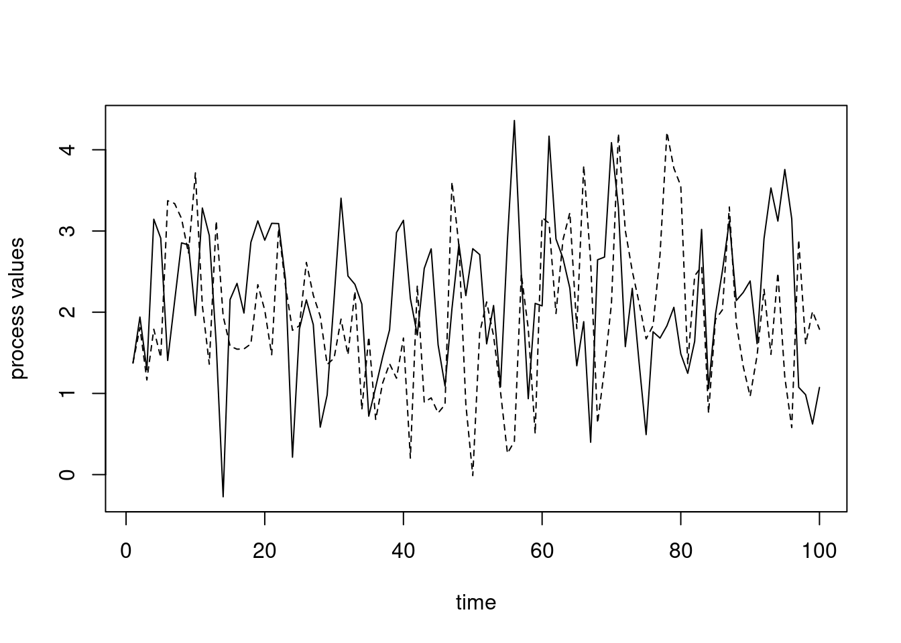

There are various videos from 2020 in the bCourses Media Gallery that you can use for reference if you want to. Note that I’ve reorganized the material in this Unit relative to 2020, so the section numbers and ordering in the videos may differ from that in the current Unit, but you should be able to match things up fairly easily.
Strings and regular expressions
Type/class coercion
Object-oriented programming - S3 classes
Object-oriented programming - R6 classes
Overview
This unit covers a variety of programming concepts, illustrated in the context of R and with comments about and connections to other languages. It also serves as a way to teach some advanced features of R. In general the concepts are relevant in other languages, though other languages may implement things differently. One of my goals for the unit is for us to think about why things are the way they are in R. I.e., what principles were used in creating the language and what choices were made? While other languages use different principles and made different choices, understanding what one language does in detail will be helpful when you are learning another language or choosing a language for a project.
I’ll likely refer to R syntax as statements or expressions, meaning any code that is a valid, complete R expression. But note that the term expression also means a specific type of object within the R language, as seen late in this Unit when we discuss computing on the language.
1. Text manipulation, string processing and regular expressions (regex)
Text manipulations in R have a number of things in common with Python, Perl, and UNIX, as many of these evolved from UNIX. When I use the term string here, I’ll be referring to any sequence of characters that may include numbers, white space, and special characters, rather than to the character class of R objects. The string or strings will generally be stored as an R character vector.
String processing and regular expressions in R
For details of string processing in R, including use of regular expressions, see the string processing tutorial. (You can ignore the sections on Python if you wish.) That tutorial then refers to the bash shell tutorial for details on regular expressions.
In class we’ll work through some problems in the string processing tutorial, focusing in particular on the use of regular expressions with the stringr package. This will augment our consideration of regular expressions in the shell, in particular by seeing how we can replace patterns in addition to finding them.
Regex/string processing challenges
We’ll work on these challenges (and perhaps one or two others) in class in the process of working through the string processing tutorial.
What regex would I use to find any number with or without a decimal place.
Suppose a text string has dates in the form “Aug-3”, “May-9”, etc. and I want them in the form “3 Aug”, “9 May”, etc. How would I do this search and replace operation? (Alternatively, how could I do this without using regular expressions at all?)
Side notes on special characters in R
Recall that when characters are used for special purposes, we need to ‘escape’ them if we want them interpreted as the actual character. In what follows, I show this in R, but similar manipulations are sometimes needed in the shell and in Python.
This can get particularly confusing in R as the backslash is also used to input special characters such as newline (\n) or tab (\t).
Here are some examples of using special characters.
Note It is hard to compile the Rmd file correctly for these R chunks, so I am just pasting in the output from running in R ‘manually’ in some cases.)
tmp <-"Harry said, \"Hi\""## cat(tmp) # prints out without a newline -- this is hard to show in the pdftmp <-"Harry said, \"Hi\".\n"cat(tmp) # prints out with the newline
Harry said, "Hi".
tmp <-c("azar", "foo", "hello\tthere\n")cat(tmp)
azar foo hello there
print(tmp)
[1] "azar" "foo" "hello\tthere\n"
grep("[\tz]", tmp) ## search for a tab or a 'z'
[1] 1 3
As a result, in R we often need two backslashes when working with regular expressions. In the next examples, the first backslash says to interpret the next backslash literally, with the second backslash being used to indicate that the caret (^) should be interpreted literally and not as a special character in the regular expression syntax.
## Search for characters that are not 'z'## (using ^ as regular expression syntax)grep("[^z]", c("a^2", "93", "zzz", "zit", "azar"))
[1] 1 2 4 5
## Search for either a '^' (as a regular charcter) or a 'z':grep("[\\^z]", c("a^2", "93", "zzz", "zit", "azar"))
[1] 1 3 4 5
## This fails (and the Rmd won't compile) because## '\^' is not an escape sequence (i.e., a special character):## grep("[\^z]", c("a^2", "93", "zit", "azar", "zzz"))## Error: '\^' is an unrecognized escape in character string starting ""[\^"## Search for exactly three characters## (using . as regular expression syntax)grep("^.{3}$", c("abc", "1234", "def"))
[1] 1 3
## Search for a period (as a regular character)grep("\\.", c("3.9", "27", "4.2"))
[1] 1 3
## This fails (and the Rmd won't compile) because ## '\.' is not an escape sequence (i.e., a special character):## grep("\.", c("3.9", "27")))## Error: '\.' is an unrecognized escape in character string starting ""\."
Challenge Explain why we use a single backslash to get a newline and double backslash to write out a Windows path in the examples here:
## Suppose we want to use a \ in our string:cat("hello\nagain")
hello
again
cat("hello\\nagain")
hello\nagain
cat("My Windows path is: C:\\Users\\My Documents.")
My Windows path is: C:\Users\My Documents.
For more information, see ?Quotes in R and the subsections of the string processing tutorial that discuss backslashes and escaping.
Advanced note: Searching for an actual backslash gets even more complicated, because we need to pass two backslashes as the regular expression, so that a literal backslash is searched for. However, to pass two backslashes, we need to escape each of them with a backslash so R doesn’t treat each backslash as part of a special character. So that’s four backslashes to search for a single backslash! Yikes. One rule of thumb is just to keep entering backslashes until things work!
## Search for an actual backslashtmp <-"something \\ other\n"cat(tmp)
something \ other
grep("\\\\", tmp)
[1] 1
try(grep("\\", tmp))
Warning in grep("\\", tmp): TRE pattern compilation error 'Trailing backslash'
Warning Be careful when cutting and pasting from documents that are not text files as you may paste in something that looks like a single or double quote, but which R cannot interpret as a quote because it’s some other ASCII quote character. If you paste in a ” from PDF, it will not be interpreted as a standard R double quote mark.
Similar things come up in the shell and in Python, but in the shell you often don’t need two backslashes. E.g. you could do this to look for a literal ^ character.
grep'\^' file.txt
2. Interacting with the operating system and external code and configuring R
Interacting with the operating system
Scripting languages allow one to interact with the operating system in various ways. Most allow you to call out to the shell to run arbitrary shell code and save results within your session.
I’ll assume everyone knows about the following functions/functionality for interacting with the filesystem and file in R: getwd, setwd, source, pdf, save, save.image, load.
To run UNIX commands from within R, use system(), as follows, noting that we can save the result of a system call to an R object:
system("ls -al") ## results apparently not shown when compiled...files <-system("ls", intern =TRUE)files[1:5]
It’s best if you can to write your code in a way that is agnostic to the underlying operating system.
To get some info on the system you’re running on:
Sys.info()
sysname
"Linux"
release
"5.4.0-120-generic"
version
"#136-Ubuntu SMP Fri Jun 10 13:40:48 UTC 2022"
nodename
"smeagol"
machine
"x86_64"
login
"paciorek"
user
"paciorek"
effective_user
"paciorek"
Controlling the behavior of R
Scripting languages generally allow you to control/customize their behavior in various ways by setting options.
To see some of the options that control how R behaves, try the options function. The width option changes the number of characters of width printed to the screen, while max.print revents too much of a large object from being printed to the screen.
## options() # this would print out a long list of optionsoptions()[1:4]
## Often it's nice to have more characters in each line on the screen,## but that would cause overly lines in the compiled file.## options(width = 120)options(max.print =5000)
The digits option changes the number of digits of numbers printed to the screen (but be careful as this can be deceptive if you then try to compare two numbers based on what you see on the screen).
options(digits =3)a <-0.123456; b <-0.1234561a; b; a == b
[1] 0.123
[1] 0.123
[1] FALSE
More on how to (and how not to) compare real-valued numbers on a computer in Unit 8.
Use Ctrl-C to interrupt execution. This will generally back out gracefully, returning you to a state as if the command had not been started. Note that if R is exceeding the amount of memory available, there can be a long delay. This can be frustrating, particularly since a primary reason you would want to interrupt is when R runs out of memory.
sessionInfo gives information on the current R session and can be very helpful for recording the state of your session (including package versions) to allow for reproducibility.
Any code that you wanted executed automatically when starting R can be placed in ~/.Rprofile (or in individual, project-specific .Rprofile files in specific directories). This could include loading packages (see below), sourcing files that contain user-defined functions that you commonly use (you can also put the function code itself in .Rprofile), assigning variables, and specifying options via options().
You can have an R script act as a shell script (like running a bash shell script) as follows. This will probably on work on Linux and Mac.
Write your R code in a text file, say exampleRscript.R.
As the first line of the file, include #!/usr/bin/Rscript (like #!/bin/bash in a bash shell file, as seen in Unit 2) or for more portability across machines, include #!/usr/bin/env Rscript.
Make the R code file executable with chmod: chmod ugo+x exampleRscript.R.
Run the script from the command line: ./exampleRscript.R
If you want to pass arguments into your script, you can do so as long as you set up the R code to interpret the incoming arguments:
args <-commandArgs(TRUE)## Now args is a character vector containing the arguments.## Suppose the first argument should be interpreted as a number ## and the second as a character string and the third as a boolean:numericArg <-as.numeric(args[1])charArg <- args[2]logicalArg <-as.logical(args[3])cat("First arg is: ", numericArg, "; second is: ", charArg, "; third is: ", logicalArg, ".\n")
Now we can run it as follows in the shell:
./exampleRscript.R 53 blah T./exampleRscript.R blah 22.5 t
First arg is: 53 ; second is: blah ; third is: TRUE .
Warning message:
NAs introduced by coercion
First arg is: NA ; second is: 22.5 ; third is: NA .
Interacting with external code
Scripting languages such as R, Python, and Julia allow you to call out to “external code”, which often means C or C++ (but also Fortran, Java and other languages).
In fact, the predecessor language to R, which was called ‘S’ was developed specifically (at AT&T’s Bell Labs in the 1970s and 1980s) as an interactive wrapper around Fortran, the numerical programming language most commonly used at the time (and still widely relied on today in various legacy codes).
Calling out to external code is particularly important in languages like R and Python that are often much slower than compiled code and less important in a fast language like Julia (which uses Just-In-Time compilation – more on that later).
In R, one can call directly out to C or C++ code using .Call or one can use the Rcpp package. Rcpp is specifically designed to be able to write C++ code that feels somewhat like writing R code and where it is very easy to pass data between R and C++.
In Python, one can directly call out to C or C++ code or one can use Cython to interact with C. With Cython, one can: - Have Cython automatically translate Python code to C, if you provide type definitions for your variables. - Define C functions that can be called from your Python code.
3. Packages and namespaces
Scripting languages that become popular generally have an extensive collection of add-on packages available online (the causal relationship of the popularity and the extensive add-on packages goes in both directions). Packages need to be installed (once) on your computer and loaded (every time you start a new session).
A big part of R’s popularity is indeed the extensive collection of add-on packages on CRAN (and GitHub and elsewhere) that provide much of R’s functionality. To make use of a package it needs to be installed on your system (using install.packages once only) and loaded into R (using library every time you start R).
Some packages are installed by default with R and of these, some are loaded by default, while others require a call to library.
If you want to sound like an R expert, make sure to call them packages and not libraries. A library is the location in the directory structure where the packages are installed/stored.
Loading packages
You can use library to either (1) make a package available (loading it), (2) get an overview of the package, or (3) (if called without arguments) to see all the installed packages.
library(dplyr) # load the packagelibrary(help = dplyr) # get some help info about the package
Packages in R (and in Python, Julia, etc.) may be installed in various places on the filesystem, and it sometimes it is helpful (e.g., if you end up with multiple versions of a package installed on your system) to be able to figure out where on the filesystem the package is being loaded from. If you run library(), you’ll notice that some of the packages are in a system directory and some are in your home directory.
.libPaths() shows where R looks for packages on your system and searchpaths() shows where individual packages currently loaded in your session have been loaded from. The help information for .libPaths gives some information about how R decides what locations to look in for packages (and how you can modify that).
If a package is on CRAN but not on your system, you can install it easily (usually). You don’t need root permission on a machine to install a package (though sometimes you run into hassles if you are installing it just as a user, so if you have administrative privileges it may help to use them). Of course in RStudio, you can install via the GUI.
Packages often depend on other packages. In general, if one package depends on another, R will install the dependency automatically, but sometimes you’ll need to install a dependency yourself. In general, package dependencies are handled very cleanly in R without you having having to worry much about it; this is less the case in Python.
Note that R will generally install the package in a reasonable place by default but you can control where it is installed using the lib argument.
install.packages('dplyr', lib ='~/Rlibs') # ~/Rlibs needs to exist!
You can also download the zipped source file from CRAN and install from the file; see the help page for install.packages. This is called “installing from source”. On Windows and Mac, you’ll need to do something like this:
install.packages('dplyr_VERSION.tar.gz', repos =NULL, type ='source')
This can be handy if you need to install an older version of a package for reproducibility or because of some dependency incompatibility.
If you’ve downloaded the binary package (files ending in .tgz for Mac and .zip for Windows) and want to install the package directly from the file, use the syntax above but omit the type= 'source' argument.
Source vs. binary packages
The difference between a source package and a binary package is that the source package has the raw R (and C and Fortran, in some cases) code as text files while the binary package has all the code in a binary/non-text format, including that any C and Fortran code will have already been compiled. To install a source package with C or Fortran code in it, you’ll need to have developer/command-line tools (e.g., XCode on Mac or Rtools.exe on Windows) installed on your system so that you have a compiler.
Managing packages using package managers
For reproducibility, it’s important to know the versions of the packages you use (and the version of R). Package managers make it easy to do this. Some useful packages that do package management in R are checkpoint, renv, and packrat. The basic commonality is that they try to make it easy to ‘freeze’ the versions of hte packages you are using, record that information, and restore the versions (potentially on some other machine and by some user other than yourself). The package manager may tell you where the packages are installed, but you can always verify things with .libPaths().
In Python, you can set up and manage isolated environments in which you can control the package versions using virtualenvs or Conda environments.
Package namespaces
The objects in a package (primarily functions, but also data) are in their own workspaces, and are accessible after you load the package using library(), but are not directly visible when you use ls(). In other words, each package has its own namespace. Namespaces help achieve modularity and avoid having zillions of objects all reside in your workspace. If we want to see the objects in a package’s namespace, we can do the following:
We’ll talk more about namespaces when we talk about scope and environments. But as some motivation for why this is useful, consider the following.
The lm function calls the lm.fit function to calculate the least squares solution in regression.
Suppose we write our own lm.fit function that does something else:
lm.fit <-function(x)print('hi')x <-7lm.fit(x)
[1] "hi"
One might expect that if one now uses lm() to fit a regression, that it wouldn’t work correctly because we have an lm.fit function in our workspace that doesn’t calculate the least squares solution. But it works just fine (see below), because lm and lm.fit are in the stats package namespace (see above) and R’s scoping rules (more later) ensure that the lm.fit that is found when I run lm is the lm.fit needed to run the regression and not my silly lm.fit function in current workspace.
n <-10x <-runif(n)y <-runif(n)mod <-lm(y ~ x)mod
Call:
lm(formula = y ~ x)
Coefficients:
(Intercept) x
0.683 -0.605
Namespace resolution
Standard practice in R has generally been to load a package and then use any of the items in the package namespace directly, e.g.,
However, particularly if you’re using the package in only a limited way, it can be a nice idea to not load the entire package and instead use the namespace resolution operator in a style that might remind you of Python and some other languages:
stringr::str_detect("hello there", "hello")
[1] TRUE
import numpy as npx = np.ndarray([0,3,5])
Of course in Python you could also load the entire package (i.e., import the entire namespace), though it’s not standard practice:
from numpy import*## OR: from numpy import ndarrayx = ndarray([0,3,5])
Loading entire packages often causes ‘name collisions’ where there are multiple functions (or variables, more genreally) that have the same name. This can be confusing. We’ll see how R determines what function to use later in the Unit.
We’ll also see more complicated data structures when we consider objects in the next section on object-oriented programming.
Types and classes
Overview and static vs. dynamic typing
The term ‘type’ refers to how a given piece of information is stored and what operations can be done with the information. ‘Primitive’ types are the most basic types that often relate directly to how data are stored in memory or on disk (e.g., boolean, integer, numeric (real-valued, aka double or floating point), character, pointer (aka address, reference).
In compiled languages like C and C++, one has to define the type of each variable. Such languages are statically typed. Interpreted (or scripting) languages such as Python and R have dynamic types. One can associate different types of information with a given variable name at different times and without declaring the type of the variable:
x <-'hello'print(x)
[1] "hello"
x <-7x*3
[1] 21
In contrast in a language like C, one has to declare a variable based on its type before using it:
double y;
double x = 3.1;
y = x * 7.1;
Dynamic typing can be quite helpful from the perspective of quick implementation and avoiding tedious type definitions and problems from minor inconsistencies between types (e.g., multiplying an integer by a real-valued number). But static typing has some critical advantages from the perspective of software development, including:
protecting against errors from mismatched values and unexpected user inputs, and
generally much faster execution because the type of a variable does not need to be checked when the code is run.
More complex types in R (and in Python) often use references (pointers, aka addresses) to the actual locations of the data. We’ll see this in detail later in the Unit.
Types and classes in R
You should be familiar with vectors as the basic data structure in R, with character, integer, numeric, etc. classes. Vectors are either atomic vectors or lists. Atomic vectors generally contain one of the four following types: logical, integer, double (i.e., numeric), and character.
Everything in R is an object and all objects have a class. For simple objects class and type are often closely related, but this is not the case for more complicated objects. As we’ll see later in the Unit, the class describes what the object contains and standard functions associated with it. In general, you mainly need to know what class an object is rather than its type.
Note You can look at Table 7.1 in the Adler book to see some other types.
Let’s look at the type and class of various data structures in R. We’ll first see that real-valued are stored as double-precision (8 byte) floating point numbers internally in R (as ‘doubles’ in C, as the R interpreter is a program written in C).
devs <-rnorm(5)class(devs)
[1] "numeric"
typeof(devs)
[1] "double"
a <-data.frame(x =1:2)class(a)
[1] "data.frame"
typeof(a)
[1] "list"
is.data.frame(a)
[1] TRUE
is.matrix(a)
[1] FALSE
is(a, "matrix")
[1] FALSE
m <-matrix(1:4, nrow =2) class(m)
[1] "matrix" "array"
typeof(m)
[1] "integer"
In most cases integer-valued numbers are stored as numeric values in R, but there are exceptions such as the result of using the sequence operater, :, above. We can force R to store values as integers:
vals <-c(1, 2, 3)class(vals)
[1] "numeric"
vals <-1:3class(vals)
[1] "integer"
vals <-c(1L, 2L, 3L)vals
[1] 1 2 3
class(vals)
[1] "integer"
Attributes
We saw the notion of attributes when looking at HTML and XML, where the information was stored as key-value pairs that in many cases had additional information in the form of attributes.
In R, attributes are information about an object attached to an object as something that looks like a named list. Attributes are often copied when operating on an object. This can lead to some weird-looking formatting when in subsequent operations the names attribute is carried along:
x <-rnorm(10*365)attributes(x)
NULL
qs <-quantile(x, c(.025, .975))attributes(qs)
$names
[1] "2.5%" "97.5%"
qs
2.5% 97.5%
-1.86 1.97
qs[1] +3
2.5%
1.14
object.size(qs)
352 bytes
We can get rid of the attribute:
names(qs) <-NULLqs
[1] -1.86 1.97
object.size(qs)
64 bytes
A common use of attributes is that rows and columns may be named in matrices and data frames, and elements in vectors:
vec <-c(first =7, second =1, third =5)vec['first']
first
7
attributes(vec)
$names
[1] "first" "second" "third"
Converting between types
This also goes by the term coercion and casting. Casting often needs to be done explicitly in compiled languages and somewhat less so in interpreted languages like R.
We convert between classes using variants on as: e.g.,
as.character(c(1,2,3))
[1] "1" "2" "3"
as.numeric(c("1", "2.73"))
[1] 1.00 2.73
as.factor(c("a", "b", "c"))
[1] a b c
Levels: a b c
Some common conversions are converting numbers that are being interpreted as characters into actual numbers, converting between factors and characters, and converting between logical TRUE/FALSE vectors and numeric 1/0 vectors.
In some cases R will automatically do conversions behind the scenes in a smart way (or occasionally not so smart way). Consider these examples of implicit coercion:
x <-rnorm(5)x[3] <-'hat'# What do you think is going to happen?indices <-c(1, 2.73)myVec <-1:10myVec[indices]
What has gone wrong and how does it relate to type coercion?
Here’s an example we can work through that will help illustrate how type conversions occur behind the scenes in R.
n <-5df <-data.frame(label =rep('a', n), val1 =rnorm(n), val2 =rnorm(n))df
label val1 val2
1 a 0.4562 0.277
2 a 0.3278 -0.283
3 a 0.0252 -0.649
4 a -1.3206 1.853
5 a 0.7681 -1.023
## Why does the following not work?try( apply(df, 1, function(x) x[2] + x[3]) )
Error in x[2] + x[3] : non-numeric argument to binary operator
## Instead, this will work. Why?apply(df[ , 2:3], 1, function(x) x[1] + x[2])
[1] 0.7327 0.0443 -0.6242 0.5322 -0.2550
Data frames and related concepts
Some notes on data frames and operations on data frames
Base R provides a variety of functions for manipulating data frames, but now many researchers use add-on packages (many written by Hadley Wickham as part of a group of packages called the tidyverse) to do these manipulations in a more elegant way. Module 6 of the R bootcamp describes some of these new tools in more details, but I’ll touch on some aspects of this here, without showing much of the tidyverse syntax.
split-apply-combine
Often analyses are done in a stratified fashion - the same operation or analysis is done on subsets of the data set. The subsets might be different time points, different locations, different hospitals, different people, etc.
The split-apply-combine framework is intended to operate in this kind of context: first one splits the dataset by one or more variables, then one does something to each subset, and then one combines the results. The dplyr package implements this framework (as does the pandas package for Python). One can also do similar operations using various flavors of the lapply family of functions such as by, tapply, and aggregate, but the dplyr-based tools are often nicer to use.
split-apply-combine is also closely related to the famous Map-Reduce framework underlying big data tools such as Hadoop and Spark.
It’s also very similar to standard SQL queries involving filtering, grouping, and aggregation.
Long and wide formats
Finally, we may want to convert between so-called ‘long’ and ‘wide’ formats, which we can motivate in the context of longitudinal data (multiple observations per subject) and panel data (temporal data for each of multiple units such as in econometrics). The wide format has repeated measurements for a subject in separate columns, while the long format has repeated measurements in separate rows, with a column for differentiating the repeated measurements.
The wide format can be useful in some situations for treating each row as a (multivariate observation), but the long formatwhile the long format is often what is needed for analyses such as mixed models. ANOVA, or for plotting, such as with ggplot2.
There are a variety of functions for converting between wide and long formats. I recommend pivot_longer and pivot_wider in the tidyr package. There are also older tidyr functions called gather and spread. There are also the melt and cast in the reshape2 package. These are easier to use than the functions in base R such as reshape or stack and unstack functions.
Piping
Piping was introduced into R in conjuction with dplyr and the tidyverse.
The tidyverse pipe is %>% while the new base R pipe is |>. These are based on the UNIX pipe, which we saw in Unit 3, though they behave somewhat differently in that the output of the previous function is passed in as the first argument of the next function. In the shell, the pipe connects stdout from the previous command to stdin for the next command.
Non-standard evaluation and the tidyverse
Many tidyverse packages use non-standard evaluation to make it easier to code. For example in the following dplyr example, you can refer directly to country and unemp, which are variables in the data frame, without using data$country or data$unemp and without using quotes around the variable names, as in "country" or "unemp". Referring directly to the variables in the data frame is not standard R usage, hence the term “non-standard evaluation”. One reason it is not standard is that country and unemp are not themselves independent R variables so R can’t find them in the usual way using scoping (discussed later in the Unit).
library(dplyr)
Attaching package: 'dplyr'
The following objects are masked from 'package:stats':
filter, lag
The following objects are masked from 'package:base':
intersect, setdiff, setequal, union
# A tibble: 6 × 7
# Groups: country [1]
year country vturn outlays realgdpgr unemp mean_unemp
<int> <chr> <dbl> <dbl> <dbl> <dbl> <dbl>
1 1960 Australia 95.5 NA NA 1.42 5.52
2 1961 Australia 95.3 NA -0.07 2.79 5.52
3 1962 Australia 95.3 23.2 5.71 2.63 5.52
4 1963 Australia 95.7 23.0 6.1 2.12 5.52
5 1964 Australia 95.7 22.9 6.28 1.15 5.52
6 1965 Australia 95.7 24.9 4.97 1.15 5.52
This ‘magic’ is done by capturing the code expression you write and evaluating it in a special way in the context of the data frame. I believe this uses R’s environment class (discussed later in the Unit), but haven’t looked more deeply.
While this has benefits, this so-called non-standard evaluation makes it harder to program functions in the usual way, as illustrated in the following code chunk, where neither attempt to use the function works.
Error in group_by(., group_var) :
Must group by variables found in `.data`.
✖ Column `group_var` is not found.
try(cpds2 <-add_mean(cpds, 'country', 'unemp'))
Error in group_by(., group_var) :
Must group by variables found in `.data`.
✖ Column `group_var` is not found.
For more details on how to avoid this problem when writing functions that involve tidyverse manipulations, see this tidyverse programming guide.
Note that the tidyverse is not the only place where non-standard evaluation is used. Consider this lm call:
lm(y ~ x, weights = w, data = mydf)
Challenge Where is the non-standard evaluation there?
5. Programming paradigms: object-oriented and functional programming
Object-oriented and functional programming are two important approaches to programming.
Functional programming focuses on writing functions that take inputs and produce outputs. Ideally those functions don’t change the state (i.e., the values) of any variables and can be treated as black boxes. Functions can be treated like other variables, such as passing functions as arguments (as one does with lapply in R, for example).
Object-oriented programming revolves around objects that belong to classes. The class of an object defines the fields (the data objects) holding information and (often) methods that can be applied to those fields. When one calls a method, it may modify the value of the fields. A statistical analogy is that an object of a class is like the realization (the object) of a random variable (the class).
One can think of functional programming as being focused on actions (or verbs to make an analogy with human language). One carries out a computation as a sequence of function calls. One can think of OOP as being focused on the objects (or nouns). One carries out a computation as a sequence of operations with the objects, using the class methods.
Many languages are multi-paradigm, containing aspects of both approaches and allowing programmers to use either approach. Both R and Python are like this, though some might consider R to be more functional and Python to be more object-oriented. That said, in R everything is an object and has a class, while there are plenty of function-based operations in Python.
import numpy as npx = np.array([1.2, 3.5, 4.2])x.shape # field (or attribute) of the numpy array classx.sum() # method of the classlen(x) # function
Different people have different preferences, but which is better depends on what you are trying to do. If your computation is a data analysis pipeline that involves a series of transformations of some data, a functional approach might make more sense, since the focus is on a series of actions rather than the state of objects. If your computation involves various operations on fixed objects whose state needs to change, OOP might make more sense. For example, if you were writing code to keep track of student information, it would probably make sense to have each student as an object of a Student class with methods such as ‘register’ and ‘assign_grade’.
6. Object-oriented programming (OOP)
Principles
Some of the standard concepts in object-oriented programming include encapsulation, inheritance, polymorphism, and abstraction.
Encapsulation involves preventing direct access to internal data in an object from outside the object. Instead the class is designed so that access (reading or writing) happens through the interface set up by the programmer (e.g., ‘getter’ and ‘setter’ methods). We’ll see this in our R6 class example below.
Inheritance allows one class to be based on another class, adding more specialized features. For example (as in our S3 example), a glm class inheriting from an lm class.
Polymorphism allows for different behavior of an object or function depending on the context. A polymorphic function behaves differently depending on the input types. A polymorphic object is one that can belong to different classes (e.g., based on inheritance), and a given method name can be used with any of the classes. An example would be having a base or super class called ‘algorithm’ and various specific machine learning algorithms inheriting from that class. All of the classes might have a ‘predict’ method.
Abstraction involves hiding the details of how something is done (e.g., via the method of a class), giving the user an interface to provide inputs and get outputs. By making the actual computation a black box, the programmer can modify the internals without changing how a user uses the system.
Classes generally have constructors that initialize objects of the class and destructors that remove objects.
Generic function OOP
Much of the object-oriented programming in R uses generic function OOP, also known as functional OOP. In this style, classes don’t have methods. Instead there are generic functions (also known as generic methods) that change their behavior based on the type of the input(s). Another way to put it is that the nouns and the verbs are separate, unliked in standard OOP.
Generic function OOP is how the (very) old S3 system in R works. It’s also a key part of the (fairly) new Julia language.
S3 classes in R
S3 classes are widely-used, in particular for statistical models in the stats package. S3 classes are very informal in that there’s not a formal definition for an S3 class. Instead, an S3 object is just a primitive R object such as a list or vector with additional attributes including a class name.
Creating our own class
We can create an object with a new class as follows:
yog <-list(firstname ='Yogi', surname ='the Bear', age =20)class(yog) <-'bear'
Actually, if we want to create a new class that we’ll use again, we want to create a constructor function that initializes new bears:
bear <-function(firstname =NA, surname =NA, age =NA){# constructor for 'indiv' class obj <-list(firstname = firstname, surname = surname,age = age)class(obj) <-'bear'return(obj)}smoke <-bear('Smokey','Bear')
For those of you used to more formal OOP, the following is probably disconcerting:
class(smoke) <-"celebrity"
Generic methods
The real power of the S3 system comes from defining class-specific methods. For example,
x <-rnorm(10)summary(x)
Min. 1st Qu. Median Mean 3rd Qu. Max.
-1.474 -0.227 0.535 0.233 0.835 1.703
y <-rnorm(10)mod <-lm(y ~ x)summary(mod)
Call:
lm(formula = y ~ x)
Residuals:
Min 1Q Median 3Q Max
-1.5153 -0.7006 0.0121 0.9148 0.9704
Coefficients:
Estimate Std. Error t value Pr(>|t|)
(Intercept) 0.413 0.330 1.25 0.25
x -0.237 0.341 -0.69 0.51
Residual standard error: 1.01 on 8 degrees of freedom
Multiple R-squared: 0.0568, Adjusted R-squared: -0.0611
F-statistic: 0.481 on 1 and 8 DF, p-value: 0.507
Here summary is a generic function (or generic method) that, based on the type of object given to it (the first argument), dispatches a class-specific function (method) that operates on the object.
The above is equivalent to directly calling the class-specific methods:
identical(summary(x), summary.default(x))
[1] TRUE
identical(summary(mod), summary.lm(mod))
[1] TRUE
This use of generic functions is convenient in that it allows us to work with a variety of kinds of objects using familiar functions. Consider the generic methods plot, print, summary, [, and others. We can look at a function and easily see that it is a generic method.
summary
function (object, ...)
UseMethod("summary")
<bytecode: 0x5637e7bde450>
<environment: namespace:base>
The UseMethod syntax is what causes the dispatching of the class-specific method associated with object and calls that method. In many cases there will be a default method (here, summary.default), so if no method is defined for the class, R uses the default. Sidenote: arguments to a generic method are passed along to the selected method by passing along the calling environment.
We can also see what classes have methods for a given generic function.
Let’s try this out on our bear class. In reality, we’d write either summary.bear or print.bear (and of course the generics for summary and print already exist) but for illustration, I wanted to show how we would write both the generic and the specific method, so I’ll write a summarize method instead of a summary method.
summarize.bear <-function(object) return(with(object, cat("Bear of age ", age, " whose name is ", firstname, " ", surname, ".\n",sep ="")))summarize(yog)
Bear of age 20 whose name is Yogi the Bear.
Why use generic functions?
We could have written summary as a regular function with a bunch of if statements or if-else clauses (or switch) so that it can handle different kinds of input objects.
This has two disadvantages:
We need to write the code that does the checking (and all the code for the different cases all lives inside one potentially very long function, unless we create class-specific helper functions).
Much more importantly, summary will only work for existing classes. And users can’t easily extend it for new classes that they create because they don’t control the summary function. So a user could not add the additional conditions/classes in a big if-else statement. The generic function approach makes the system extensible – we can build our own new functionality on what is already in R.
The print method
Like summary, print is a generic method, with various class-specific methods, such as print.lm.
Note that the print function is what is called when you simply type the name of the object, so we can have object information printed out in a structured way. Recall that the output when we type the name of an lm object is NOT simply a regurgitation of the elements of the list - rather print.lm is called.
Similarly, when we used print(object.size(x)) we are invoking the object_size-specific print method which gets the value of the size and then formats it. So there’s actually a fair amount going on behind the scenes.
Surprisingly, the summary method generally doesn’t actually print out information; rather it computes things not stored in the original object and returns it as a new class (e.g., class summary.lm), which is then automatically printed, per my comment above (e.g., using print.summary.lm), unless one assigns it to a new object. Note that print.summary.lm is hidden from user view (it’s a private object in the stats namespace).
out <-summary(mod)class(out)
[1] "summary.lm"
out
Call:
lm(formula = y ~ x)
Residuals:
Min 1Q Median 3Q Max
-1.5153 -0.7006 0.0121 0.9148 0.9704
Coefficients:
Estimate Std. Error t value Pr(>|t|)
(Intercept) 0.413 0.330 1.25 0.25
x -0.237 0.341 -0.69 0.51
Residual standard error: 1.01 on 8 degrees of freedom
Multiple R-squared: 0.0568, Adjusted R-squared: -0.0611
F-statistic: 0.481 on 1 and 8 DF, p-value: 0.507
print(out)
Call:
lm(formula = y ~ x)
Residuals:
Min 1Q Median 3Q Max
-1.5153 -0.7006 0.0121 0.9148 0.9704
Coefficients:
Estimate Std. Error t value Pr(>|t|)
(Intercept) 0.413 0.330 1.25 0.25
x -0.237 0.341 -0.69 0.51
Residual standard error: 1.01 on 8 degrees of freedom
Multiple R-squared: 0.0568, Adjusted R-squared: -0.0611
F-statistic: 0.481 on 1 and 8 DF, p-value: 0.507
## One can look at the code for the method (not shown):## getS3method(f = "print", class = "summary.lm")
Inheritance
Let’s look at the lm class, which builds on lists, and glm class, which builds on the lm class. Here mod is an object (an instance) of class lm.
[1] add1 alias anova case.names coerce
[6] confint cooks.distance deviance dfbeta dfbetas
[11] drop1 dummy.coef effects extractAIC family
[16] formula hatvalues influence initialize kappa
[21] labels logLik model.frame model.matrix nobs
[26] plot predict print proj qr
[31] residuals rstandard rstudent show simulate
[36] slotsFromS3 summary variable.names vcov
see '?methods' for accessing help and source code
Often S3 classes inherit from lists (i.e., are special cases of lists), so you can obtain components of the object using the $ operator.
As noted with lm and glm objects, we can assign more than one class to an object. Here summarize still works, even though the primary class is grizzly_bear.
The classes should nest within one another with the more specific classes to the left, e.g., here a grizzly_bear would have some additional fields on top of those of a bear, perhaps number_of_people_killed (since grizzly bears are much more dangerous than some other kinds of bears), and perhaps additional or modified methods. grizzly_bear inherits from bear, and R uses methods for the first class before methods for the next class(es).
The above is an example of polymorphism. yog is a polymorphic object and the various methods are polymorphic in that print can be used with the bear class, the grizzly_bear class, and other classes beyond that.
Challenge How would you get R to quit immediately, without asking for any more information, when you simply type k (no parentheses!) instead of quit()? (Hint: you can do this by understanding what happens when you type k and how to exploit the S3 system.)
Multiple dispatch OOP
S3 method dispatch involves only the first argument to the function. In contrast, Julia emphasizes the importance of multiple dispatch as particularly important for mathematical computation. With multiple dispatch, the specific method can be chosen based on more than one argument.
The old (but still used in some contexts) S4 system in R and the (very) new R7 system both provide for multiple dispatch.
As a very simple example unrelated to any specific language, multiple dispatch would allow one to do the following with the addition operator:
The idea of having the behavior of an operator or function adapt to the type of the input(s) is one aspect of polymorphism.
Both S4 and R7 are designed to be more formal than the S3 system (recall how we could just ‘create’ an S3 class by giving a class name to an existing list). With S4 and R7, you need to define your classes.
‘Standard’ OOP
What I’m calling ‘standard’ object-oriented programming is the style of OOP used in languages such as Python, C++, and Java. In R, one can use this style via the R6 system (or the older referenceClass system).
In this style, objects belong to classes. A class is made up of fields (the data objects) that store information and methods that operate on the fields. Thus, unlike generic function OOP, the verbs are part of the nouns.
We’ll illustrate this style of OOP using an example with an R6 class.
R6 classes
R6 classes are a somewhat new construct in R, with a class-based approach fairly similar to Python and C++. Importantly, they behave like pointers. We’ll discuss pointers in detail later. Let’s work through an example where we set up the fields of the class and class methods, including a constructor.
Example
Our example is to create a class for working with random time series. Each object of the class has specific parameter values that control the stochastic behavior of the time series. With a given object we can simulate one or more time series (realizations).
Here’s the initial definition of the class, with both public (user-facing) and private (internal use only) methods and fields.
library(R6)tsSimClass <-R6Class("tsSimClass",## class for holding time series simulatorspublic =list(initialize =function(times, mean =0, corParam =1) {library(fields)stopifnot(is.numeric(corParam), length(corParam) ==1)stopifnot(is.numeric(times)) private$times <- times private$n <-length(times) private$mean <- mean private$corParam <- corParam private$currentU <-FALSE private$calcMats() },changeTimes =function(newTimes) { private$times <- newTimes private$calcMats() },getTimes =function() {return(private$times) },print =function() { # 'print' methodcat("R6 Object of class 'tsSimClass' with ", private$n, " time points.\n", sep ='')invisible(self) },simulate =function() {if(!private$currentU) private$calcMats()## analogous to mu+sigma*z for generating N(mu, sigma^2)return(private$mean +crossprod(private$U, rnorm(private$n))) } ),## private methods and functions not accessible externallyprivate =list(calcMats =function() {## calculates correlation matrix and Cholesky factor lagMat <- fields::rdist(private$times) # local variable corMat <-exp(-lagMat^2/ private$corParam^2) private$U <-chol(corMat) # square root matrixcat("Done updating correlation matrix and Cholesky factor.\n") private$currentU <-TRUEinvisible(self) },n =NULL, times =NULL,mean =NULL,corParam =NULL,U =NULL,currentU =FALSE ))
Now let’s see how we would use the class.
myts <- tsSimClass$new(1:100, 2, 1)
Done updating correlation matrix and Cholesky factor.
myts
R6 Object of class 'tsSimClass' with 100 time points.
set.seed(1)## here's a simulated time seriesy1 <- myts$simulate()plot(myts$getTimes(), y1, type ='l', xlab ='time',ylab ='process values')## simulate a second seriesy2 <- myts$simulate()lines(myts$getTimes(), y2, lty =2)

We could set up a different object that has different parameter values. That new simulated time series is less wiggly because the corParam value is larger than before.
myts2 <- tsSimClass$new(1:100, 2, 4)
Done updating correlation matrix and Cholesky factor.
set.seed(1)## here's a simulated time series with a different value of## the correlation parameter (corParam)y3 <- myts2$simulate()plot(myts$getTimes(), y1, type ='l', xlab ='time',ylab ='process values')lines(myts$getTimes(), y2, lty =2)lines(myts2$getTimes(), y3, col ='red')
Copies and references
Next let’s think about when copies are made. In the next example mytsRef is a copy of myts in the sense that both names point to the same underlying object. But no data were copied when the assignment to mytsRef was done.
mytsRef <- myts## 'mytsRef' and 'myts' are names for the same underlying objectmytsFullCopy <- myts$clone() ## Now let's change the values of a fieldmyts$changeTimes(seq(0,1000, length =100))
Done updating correlation matrix and Cholesky factor.
myts$getTimes()[1:5]
[1] 0.0 10.1 20.2 30.3 40.4
mytsRef$getTimes()[1:5] # the same as `myts`
[1] 0.0 10.1 20.2 30.3 40.4
mytsFullCopy$getTimes()[1:5] # different from `myts`
[1] 1 2 3 4 5
In contrast mytsFullCopy is a reference to a different object, and all the data from myts had to be copied over to mytsFullCopy. This takes additional memory (and time), but is also safer, as it avoids the possibility that the user might modify myts and not realize that they were also affecting mytsRef.
Encapsulation
Why have private fields (i.e., encapsulation)? The use of private fields shields them from modification by users. In this case, that prevent users from modifying the times field. Why is this important? In this example, the correlation matrix and the Cholesky factor U are both functions of the vector of times. So we don’t want to allow a user to directly modify times. If they did, it would leave the fields of the object in inconsistent states. Instead we force them to use setTimes, which correctly keeps all the fields in the object internally consistent (by calling calcMats). It also allows us to improve efficiency by controlling when computationally expensive operations are carried out.
try(myts$times <-1:10)
Error in myts$times <- 1:10 : cannot add bindings to a locked environment
Final comments
As we saw above, a copy of an object is just a pointer to the original object, unless we explicitly invoke the clone method.
Classes can inherit from other classes. E.g., if we had a simClass and we wanted the tsSimClass to inherit from it:
R6Class(tsSimClass, inherit = simClass, ...)
If you need to refer to methods and fields you refer to the entire object as either self or private.
More details on R6 classes can be found in the Advanced R book.